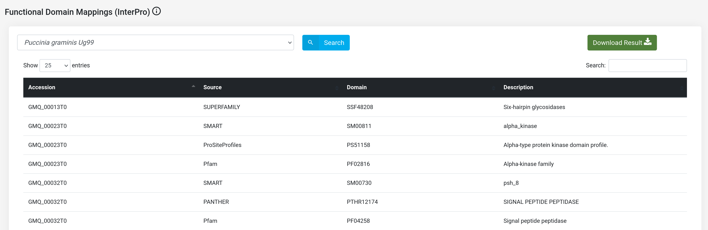
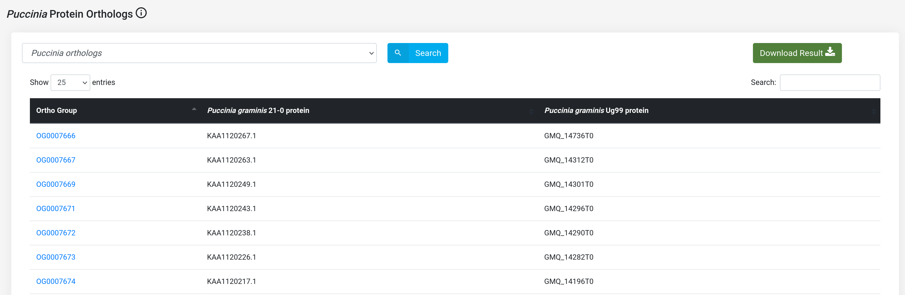
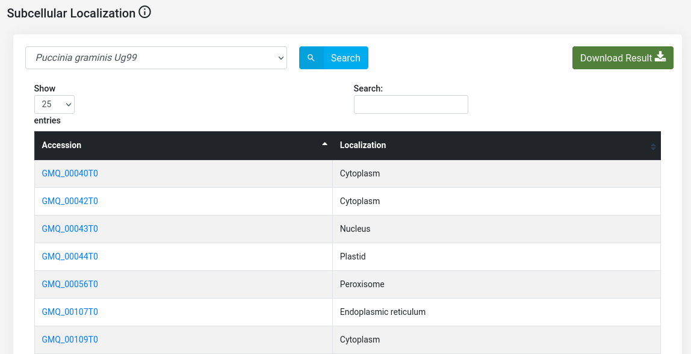
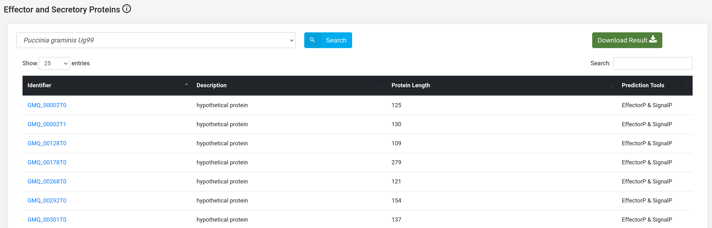
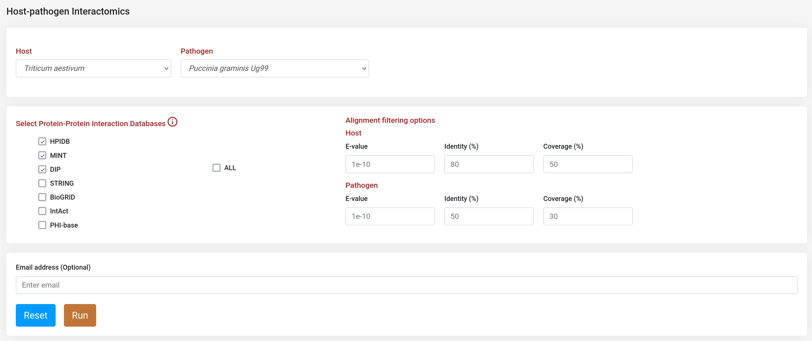
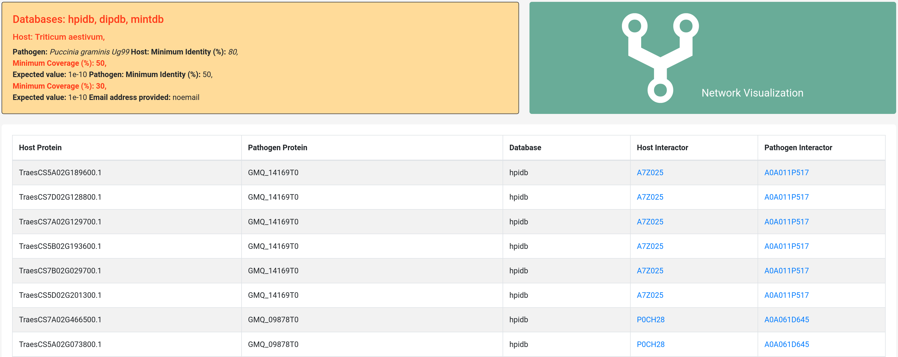
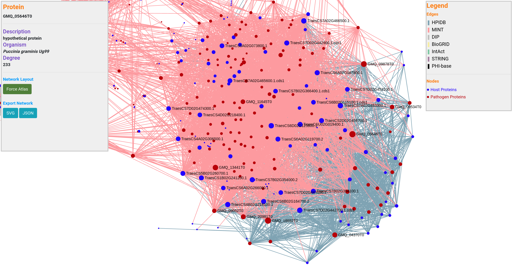
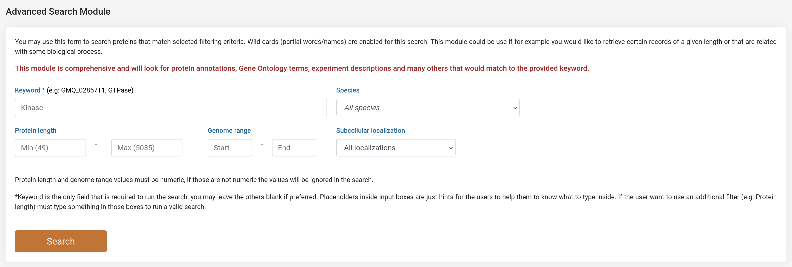
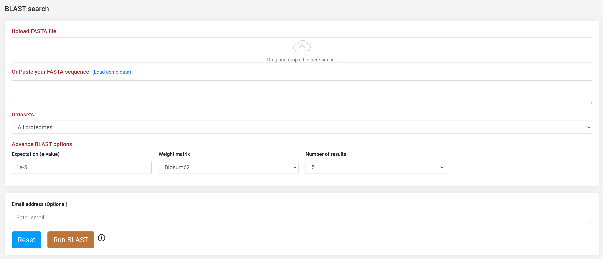

Help section of TRustDB will guide you how to navigate through the database. If you have any questions that are not covered on this page, please send an email to Raghav Kataria
Wheat (Triticum aestivum), the most widely cultivated crop in the world, and ranks 3rd in terms of global production. In the recent years, the occurence of stem rust in wheat has affected the grain yield and quality of the crop to a great extent, thus proving to be a major threat to the agriculture. The disease is caused by two fungal pathogens, Puccinia graminis 21-0 and Puccinia graminis Ug99. This database has been implemented to provide the functional annotation of the proteins of Puccinia species, along with the "Host-pathogen interactomics" tool, a platform to compare the predicted interactome of host-pathogen system.
Data collected from the literature or resulted from the annotation pipeline of TRustDB is presented in seven search modules. In five of those modules, Puccinia protein annotation can be retrieved (Puccinia orthologs, Subcellular Localization Annotation, Gene Ontology (GO) Term Annotation, Functional Domain Mappings (InterPro), Effector and secretory proteins). In addition, the module "Host-pathogen interactions" is available to gather interactions concerning those Triticum proteins that were found to be related with Common Bunt disease on the basis of interolog-based computational approach. The module data will be displayed according to the dataset selected.
Note: Every feature page has an information icon that gives a brief information about the annotaions available on that particular page of the database.
(a) Fetch the functional domains of Puccinia species proteins.
(b) Get the Orthologs of Pgt Ug99 and Pgt 21-0.
(c) Obtain the extracellular proteins of Puccinia species proteins.
(d) Retrieve the effector and secretory proteins of Puccinia species.
With Interactomics tool, a user can find the interactions between host (Triticum aestivum) and pathogens (Pgt Ug99 & Pgt 21-0). Other options for the user in this module include selecting which protein-protein database will be used as a template in the prediction process, or to define BLASTp alignment filters to determine homolog proteins.
When a job is submitted it will be assigned to a unique identifier that user can access to check the status of the job (queried, running or done). After the job is completed it will display the results in an enriched table with the option to sort the content by column or to be filtered by keyword; result table can be downloaded in excel or pdf format, or copy as clipboard. Users also can provide an email address to receive a notification when the job completes.
TRustDB provides a network visualization platform, implemented using SigmaJS. This plugin was specially chosen given its performance at displaying large networks. From the host-pathogen network visualization, a user can visualize a set of traits for each node (species, description, degree), and also can easily identify hub nodes (nodes with a higher number of edges). This is useful, as hub nodes have been found crucial in infectious disease pathways. A user is not limited to the network analysis that is provided through our database, the resulted network can be further examined in any network analyzer that could handle JSON or tabular network files.
This tool provides an advanced search module that can be used to search for proteins that fulfill a selected filtering criterion, means that for a given keyword plus a set of filtering parameters, this module will look up for any record that match. This search module is comprehensive and will look for protein annotations, GO terms, experiment descriptions and many others that would match to the provided keyword. Additionally, a basic option to perform a quick search of a protein accession is available at all the pages of TRustDB, and both the advanced and the basic search will display the complete information that can be obtained from our database records.
BLAST was implemented locally in our server to provide to the user the functionality of homology sequence search. In addition to the proteome datasets, a user can select to query its sequences against all the proteomes (default option). User can upload either a nucleotide or amino acid sequence, and the system will automatically detect the specific program (BLASTp or BLASTx) to be performed.
Result page provides a summarized version, whereby the user can download the alignments in tabular or standard alignment format. Also, there is a more detailed option in which the alignments are visualized in an enriched mode.